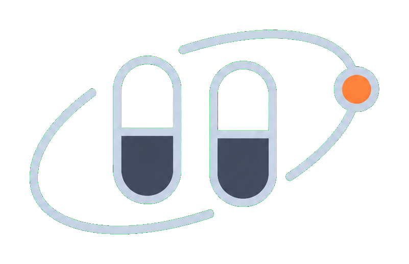

For the demo, the patient story centers on a cancer medicine.
Spot risk before treatment is delayed.
Sanitas helps hospitals see which medicines are exposed, why the risk exists, and what the supply team should check next.

SanitasSanitas helps hospitals see which medicines are exposed, why the risk exists, and what the supply team should check next.
Hospitals often see the problem when ordering gets hard. By then, oncology teams may already be planning substitutions, rationing, or delays.
For the demo, the patient story centers on a cancer medicine.
Suppliers, ingredients, quality events, logistics, and market signals all matter.
It reads the mapped graph, searches for one newer source, adds it as supporting evidence, and prepares report context.
The demo shows the investigation steps instead of hiding them.
The output is prepared for the hospital team, not auto-approved.
Prepare alternate supplier order. Verify approved supplier availability and lead time before stock falls below safety threshold.
With six months, we would connect live data streams, expand the graph, and test it with hospital supply teams.